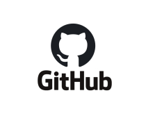

-
 Project -> Fish Classification
Project -> Fish Classification
This is a project that mainly deals in classifying fishes according to its biological appearance. This visionary initiative underscores the significance of sustainable fishing practices, ecosystem rejuvenation, the establishment of marine reserves, and the conservation of endangered species.
-
 Project -> Diabetic Retinopathy
Project -> Diabetic Retinopathy
Diabetic retinopathy (die-uh-BET-ik ret-ih-NOP-uh-thee) is a diabetes complication that affects eyes. It's caused by damage to the blood vessels of the light-sensitive tissue at the back of the eye (retina). This project maily focuses on identifying the case and classify if the patient has the disease or not.
-

GitHub
All my projects, contributions and additional works are posted in GitHub. Click here to see my github profie Godfrey Ashwanth Github
-
Hackerank
All my coding practices, badges earnerd, my contributions and additional works are posted in Hackerrank. Click here to see my hackerrank profie Godfrey Ashwanth Hackerrank
Internships
My Traineeship @ MedTourEasy
MedTourEasy provided me with 30-day training for the role of "Traineeship in data analytics." gained real expertise with data manipulation and the application of analytical approaches by working with a range of data sources, project situations, and data analysis tools, including Excel, SQL, Python, Jupyter Notebooks, and Cognos Analytics.
Week 1 - Introduction to Data Analytics, Excel Basics for Data Analysis and Data Visualization and Dashboards with Excel. Week 2 - Python for Data Science, AI & Development, Python Project for Data Science and Databases and SQL for Data Science with Python. Week 3 - Data Analysis with Python and Data Visualization with Python. Week 4 - Healthcare Analytics Capstone Project.
I worked under the supervision of project mentor & developed the project entitled “Analyze Death Age Difference of Right Handers with Left Handers”.
Social Work
I got involved with the renowned non-governmental group New Crescent Research and Education Foundation, which aims to advance welfare and public awareness.As part of my contribution to the group, I created a maganize of their annual events, which they will be able to keep as a record from 2013 to 2023. I also offered my services as a volunteer at one of the group's eye camps. Assisting with these orgasizations makes me very happy.
Extra caricular Activity
In addition to my usual routine, I like engaging in extracurricular activities. In addition to designing web apps, leading workshops, and enrolling in several groups, I also plan events and offer guest lectures to my friends.